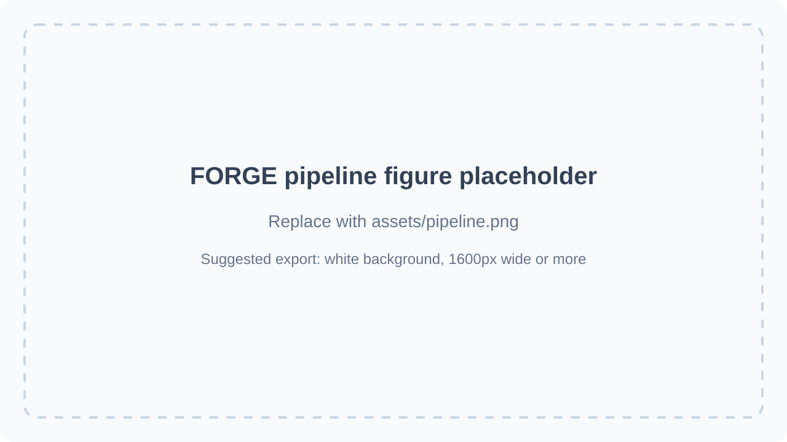

FORGE
Project page for FORGE. Replace this one-line summary with your paper tagline or contribution statement.
Institution / Lab Name
Abstract
Add your abstract here. A good project-page abstract is usually one short paragraph covering the problem, the core idea of FORGE, and the main results.
Pipeline Overview

Figure 1. Overall pipeline of FORGE. Replace
assets/pipeline-placeholder.svg with your final pipeline image later.Method
Use this section to describe the main components of your method. If you want a more complete paper page later, you can add teaser results, qualitative comparisons, videos, and BibTeX below.
BibTeX
@article{forge2026,
title={FORGE},
author={Author 1 and Author 2 and Author 3},
journal={arXiv preprint arXiv:XXXX.XXXXX},
year={2026}
}